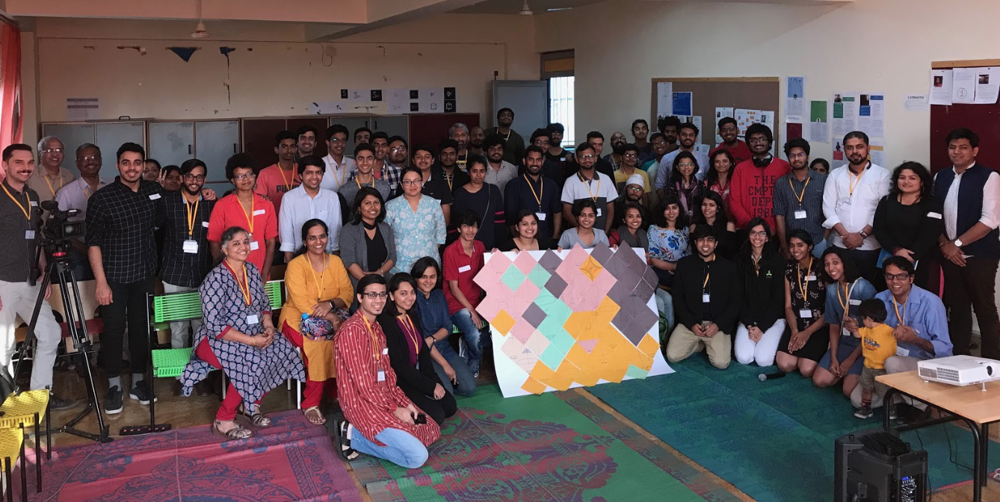
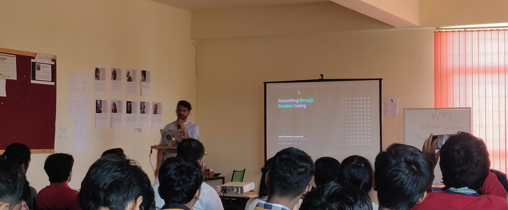

Welcome to Processing Community Day (PCD) - Bangalore 2020 is a day to celebrate and explore art, code, and diversity around the world. We define the format of our event in any way that serves our local communities. What does that mean? - aside from the conventional lecture / demo format, our PCD can be a show & tell session, a zine-making session, an audio-visual performance, a DIY art show, a game jam, a group discussion on software art or ALL OF THE ABOVE.
All submissions due by Dec 31st 2019
For any questions, email bangalore@processingindia.org
A focus of this project is to make learning how to program and make creative work with code accessible to diverse communities. Here's a snapshot of PCD Bangalore from last year
A group picture of the participants of PCD Bangalore — group of people in the center are holding the “Data Selfie” installation

Usha Mohanraj presenting her talk “Anyone Can Code: Learning to code at 50”
Hardik Chandrahas presenting his talk “Storytelling through creative coding”

Participants in the “ Generative Futures” workshop working on their laptops
-

Karthik Dondetiis a practicing architect and founder of Voxelscapes - an Architecture and Computational Design studio, and Codebalé - Generative art studio based in Bangalore. He holds a Bachelors Degree in Architecture from the School of Planning and Architecture, New Delhi and a Masters Degree focusing on Design and Technology from the Graduate School of Design at Harvard University.
-

Manaswini Das is a software engineer from Bangalore, India. She holds a Bachelor's degree in computer science and is currently an associate software engineer at Red Hat. She has also been an Outreachy alumnus and a Processing Foundation fellow. She is passionate about open source and mentoring.
-

Mathura Govindarajan is a software engineer and creative technologist from Bangalore, India. She is founder of Paper Crane lab - an education lab in Bangalore. She holds a Bachelors in Electronics Engg. and completed her Masters and Fellowship at New York University's Interactive Telecommunications program.
-

Rushali Paratey is an artist and engineer currently based in LA where she works as a technologist at Alchemy. She worked as Research Resident at New York University's Interactive Telecommunications program where she received her Masters.
Meet the Organisers!